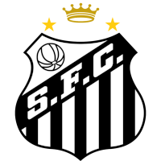

SANTOS FUTEBOL CLUBE
O Santos Futebol Clube é um clube brasileiro fundado em 14 de abril de 1912, com sede na cidade homônima. O clube manda as suas partidas no Estádio Urbano Caldeira, mais conhecido como Vila Belmiro, com as cores do clube sendo branco e preto e seu mascote oficial sendo a famosa Baleia Orca. O Santos tornou-se um dos clubes mais bem-sucedidos do Brasil e reconhecidos mundialmente. Ficou famoso na década de 1960 pelos vários títulos internacionais e nacionais conquistados e por ter revelado Pelé, considerado por muitos como o maior jogador da história do esporte. Além disso, o Rei também tem o marco de maior artilheiro da história do Santos e o segundo maior artilheiro da Seleção Brasileira. À frente de Pelé, com mais de 70 gols pela Seleção em jogos oficiais, está Neymar, outro jogador também revelado pelo clube. O Santos é também o único clube brasileiro a ser campeão estadual, nacional, continental e mundial no mesmo ano, em 1962. Outro feito único do clube é ser o que mais marcou gols na história do futebol mundial, tendo sido o primeiro a alcançar a marca de 13 mil gols.
Ao longo de sua história, o Santos conquistou um grande número de títulos internacionais, com destaque para os mundiais de 1962 e 1963, as Copas Libertadores de 1962, 1963 e 2011, a Recopa dos Campeões Intercontinentais de 1968, a Copa CONMEBOL de 1998 e a Recopa Sul-Americana de 2012. No cenário nacional é octacampeão brasileiro: 1961, 1962, 1963, 1964, 1965, 1968, 2002 e 2004. Ainda no âmbito nacional, o clube possui uma Copa do Brasil vencida em 2010, totalizando nove conquistas nacionais. Outros títulos importantes incluem cinco Torneios Rio-São Paulo, 22 Campeonatos Paulistas e a Copa Paulista de 2004. Na somatória de títulos oficiais de abrangência internacional e nacional, o clube possui 17 conquistas. Ao todo, somando competições oficiais, amistosas e outras taças, o clube possui 305 títulos. O Peixe foi um dos únicos a vencer o Campeonato Brasileiro de forma invicta, em 1963, 1964 e 1965. O Santos foi eleito pela FIFA em 2000 o quinto maior clube de futebol do Século XX, sendo o melhor clube das Américas na lista, e também recebeu no ano de seu centenário na câmara dos deputados em Brasília pela FIFA o título de "maior clube sul-americano do Século XX".